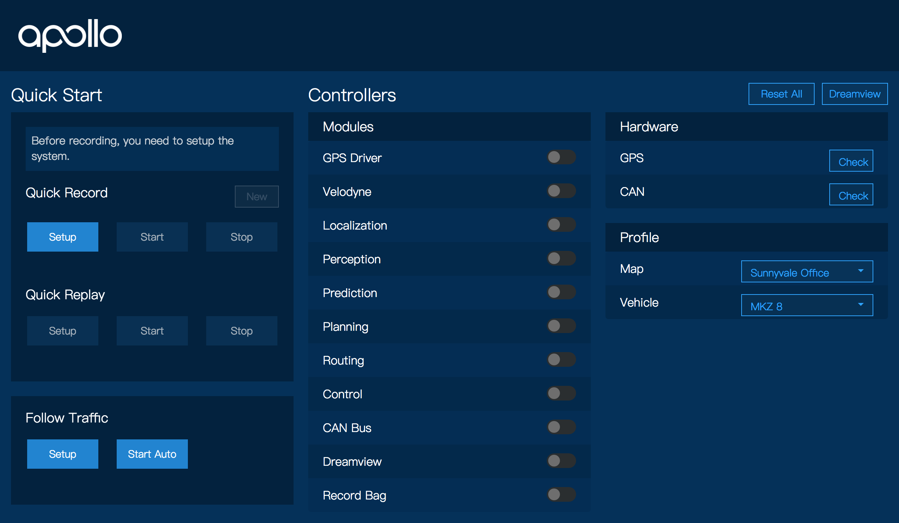

Apollo 1.5 Quick Start Guide
This quick start focuses on Apollo 1.5 new features. For general Apollo concepts, please refer to Apollo 1.0 Quick Start and Apollo Software Installation Guide.
Onboard Test
-
For vehicle onboard test, make sure you have calibrated the extrinsic parameters between the LiDAR and the GNSS/INS. For sensor calibration, please refer to Apollo 1.5 LiDAR calibration guide before you proceed.
-
Launch Docker Release Container
-
Launch HMI
Use your favorite browser to access HMI web service in your host machine browser with URL http://localhost:8887
-
Select Vehicle and Map
You'll be required to setup profile before doing anything else. Click the dropdown menu to select your HDMap and vehicle in use. The list are defined in HMI config file.
Note: It's also possible to change profile on the right panel of HMI, but just remember to click "Reset All" on the top-right corner to restart the system.

-
Start Modules
Set up the system by clicking the "Setup" button on left panel.

-
(New!) Be Cautious When Starting Autonomous Driving
Make sure all modules are on and hardware is ready, and the vehicle is in a good state which is safe to enter auto mode to follow the traffic to destination.
Click the "Start Auto" button, then it will drive you there!